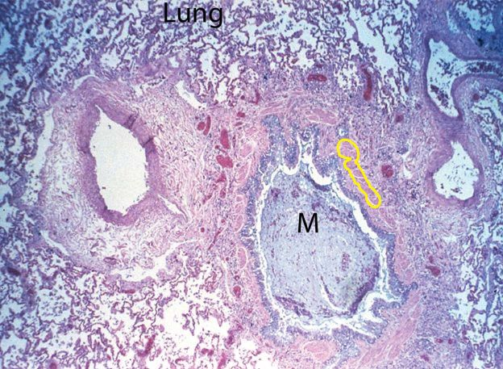

| Pulmonary Microscopic
Pathology Image 2 |
|
|  | |
| This is a hematoxylin-eosin stained slide. A bronchus is occluded with a mucous plug (M), and surrounding it is an inflammatory infiltrate. The smooth muscle in the bronchiole shows hypertrophy (some outlined in yellow). Other airways are affected, too. Lung tissue (Lung) in the periphery is normal. | |
|
|